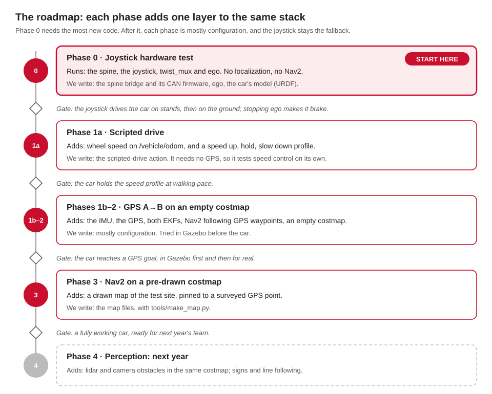

Where the project stands on 10 October 2026: the plan in five phases, the next twelve steps, what's done, and the work left in each area. Who owns each area is Q33: see Starting points.
The plan

Where we are
| Part | State |
|---|---|
| The software stack | works end to end in simulation: the turtle, Gazebo, Nav2 goals, replay. On Linux, and on a Mac since 10 Oct |
| The car | untested nothing has run on it yet. It runs the 2025-26 software on Humble, and the spine's board code is missing |
| Phase 0 on the car | waits on Jazzy on the car's computers (Q24), and on the spine (Q10–Q17) or the legacy path |
The next twelve steps
From the design doc's next steps, in order.
| # | Step | State |
|---|---|---|
| Now | ||
| 1 | Secrets: whoever controls the accounts revokes the GitHub token and Firebase keys, and changes the WiFi password (Q34) | needs you |
| 2 | Backups: image the Orin and the Pis before anything is reflashed, and list what's on them | needs you |
| 3 | Inventory the car: take a tape measure and Q1–Q9, Q18, Q20 and Q22 to the car. Photograph the labels on the GPS, the IMU, the motor controller and the actuators | needs you |
| 4 | Team meeting: accept or change each Proposed decision, and name an owner per area (Q33) | needs you |
| Without the car | ||
| 5 | Repo: on GitHub (zander1976/aav, private), with CI running pixi run test on Linux and a Mac |
untested CI's first run comes with the first push |
| 6 | Jazzy everywhere: every developer installs it, with Pixi | works on oirp-spss and Ben's Mac |
| 7 | ego and the turtle with a real joystick: the first end-to-end chain | works with the keyboard; the joystick is untested |
| 8 | Scripted driver: an action, tested in turtlesim | works |
| 9 | CAN frame map: finish the DBC with the firmware owner; bench-test the spine with a USB-CAN adapter and candump |
untested the DBC is a draft; no spine board yet |
| 10 | URDF: from the measurements | untested it exists, with guessed numbers |
| On the car | ||
| 11 | Phase 0: CAN to the Orin and the spine, then the car profile on stands with localization and Nav2 off, then on the ground at walking pace |
missing |
| 12 | Phase 1: the scripted drive on the car. GPS A→B in Gazebo first, then on the car | missing |
Done so far
| When | What |
|---|---|
| 9 Oct, before the first commit | Surveyed all 19 of the 2025-26 team's repos; found the leaked secrets; wrote the design doc with Q1–Q34 |
| 9 Oct, evening | The workspace: our messages, the CAN map and its codec, spine-core, ego, both bridges, the adapters, the scripted driver, vehicle.yaml, the map maker. It builds on Jazzy with Pixi, and the turtle drives through the mux and ego |
| 9–10 Oct, overnight | Three audits (the firmware contract, the Jazzy port, a live run) and their fixes; the spine's safety rules (arming, timeouts, faults); the docs as web pages and a PDF; the Rust example; the network doctor; design doc revision 58 |
| 10 Oct, on Ben's Mac | Everything builds and passes on a Mac, after one macOS fix; the turtle, Gazebo, Nav2, the Rust example, the docs and the doctor all run; recording fixed for Macs; these pages |
| 10 Oct, afternoon | Perception brought in: YOLO with a stop-sign lock, radar clustering, lane keeping on /drivers/ai/cmd_vel; the ml environment (PyTorch, YOLO, Core ML); the HUD's back end on our topics; the spine's device drivers in Rust; bench mode: the whole car graph on a laptop, with the spine's firmware logic on a model car, and pixi run bench-check (7 of 7). Found on the way: a stop that coasted, a scripted drive that stretched, an executor that spun a CPU core, and best-effort cameras that lost every image on a Mac |
| 10–11 Oct, overnight | Five pieces in parallel: the HUD app's changes (its e-stop button, Cancel, the camera; Flutter in vendor/), the car's launch with perception as parts and the GPS driver in Pixi, the lane finder (bench-check --lane), the spine's Pico 2 program with a CAN driver and flashing tools, and obstacles in Nav2's costmap. Found on the way: the HUD app could never connect to its back end |
What needs doing, by area
Integration and the team
- Steps 1–4 above: secrets, backups, the car's inventory, the team meeting. Step 5, the repo, is done.
- One
ROS_DOMAIN_IDfor the car and every laptop. - The car's computers on Jazzy: Pixi on today's Ubuntu 22.04 first, then the reflash to JetPack 7.2 after a backup (Q24).
- Merge the older code into
aavfolder by folder: see The older code.
Today's car: the legacy path
- Run
aav_legacyon the car for the first time: wheels off the ground, e-stop in reach, low speed. - Check the steering sign, the throttle direction, and that the car stops when the deadman is released.
- Use
/dev/serial0, not/dev/ttyAMA0, on the Motor Pi:ttyAMA0is the Bluetooth UART on a Pi 3 or 4. - Make
secrets.hfromsecrets.h.example, with a new WiFi password.
The spine and CAN
- Choose the microcontroller, the board and the owner (Q10–Q13).
- Try the Pico 2 program (
boards/pico2) on a spare Pico 2 with a 3.3 V MCP2515 module:pixi run spine-uf2. If the team picks an STM32, write its board program the same way: it implementsspine-board'sBoardtrait. - Decide: the steering on an e-stop (hold, or centre as the old firmware did); the brake after boot; the RC gear switch's brake. Each is one constant in
spine-corenow. Firmware has the details. - Tune the speed loop on the car: on the bench it lags a ramp by about a second.
- Wire CAN: a transceiver on the Orin (or a USB adapter), 120 Ω at each end (Q14, Q15).
- Calibrate the steering (Q2), the brake (Q3) and the throttle (Q4).
- Still open in the logic: the e-stop frame's counter isn't checked, and what happens when RC releases and when nobody drives.
Ego and vehicle control
- Measure the car (Q1) and replace every guess in
vehicle.yaml. - Steering at standstill (Q27).
- Raise the 1.0 m/s speed cap only as the test plan allows.
Localization and sensors
- Identify the GPS (Q18), and confirm its driver:
ublox_gpsfor now (it runs in Pixi too), ornmeaorublox_dgnss(gps_driver:=). - Survey the test site's datum, and set the magnetic declination (0 now; about 12° W in Ottawa).
- Run the IMU on the car (Q20); convert its magnetometer to tesla, then calibrate it.
- The wheel encoder: run it on the car; its speed comes in steps of about 1.2 m/s, too coarse at walking pace.
- Fill in the USB serial numbers in
tools/udev/99-aav.rules.
Navigation and costmaps
- Draw the real test site (Q21) and drive it in Gazebo first.
- Nav2's lookahead (N7): its turn command flips sign about once a second.
- Restart crashed sensor drivers (N3): Nav2 gives up without TF.
- Later: the radar obstacle layer, and the collision monitor. The radar's clusters are ready on
/perception/radar/clusters.
Drivers and teleop
- The first real joystick test, and the team joystick's button numbers.
- The e-stop button: pick one (not the deadman), and make
/safety/estopreach the mux reliably (N2). - Joystick handover (Q28).
Perception
- Find the 2024-25 team's trained
best.pt, and back up the 2025-26 detector from the Orin. - ~~Write the lane finder~~: done 11 Oct,
aav_lane_finder. Next: tune it on the real camera's pictures. - Identify the cameras (Q22); fill in their udev names; calibrate them (
pixi run calibrate-camera, how): the stop-sign distance (4.7 m) then uses their lens. - TensorRT on the Orin, after the reflash (Q24):
python3 tools/build_engine.pythere.
The HUD
- Keep the Flutter app or not (Q29). Its back end,
aav_hud, is on the new topics, and the app's small changes are done (11 Oct): HUD. - Its boot scripts still use the old Humble workspace and
/home/aavui. - Its map database downloads with
pixi run get-hud-map. The OSRM route data and the tile server still need a download step.
Simulation
- Look at the Gazebo window and RViz on a Mac, and say what they show.
- Make the bench's model car match the measured car (Q1-Q5), once it's measured.
- CARLA on the NVIDIA computer: the adapter is ready (CARLA, Q31).
Risks to keep in mind
| Risk | What we do about it |
|---|---|
| A runaway car: today's ESP32 has no command timeout | wheels off the ground and the e-stop in hand until the spine's watchdog exists |
| Leaked secrets in public repos | revoke and change them (Q34); never copy them into aav |
| Losing work on the Orin in the reflash | image it first |
| Jazzy and Humble on one network | move every computer together |
A lost /safety/estop message (N2) |
the backends brake on it too; make it reliable |
| Plain GPS may be off by metres | identify the receiver early; RTK if it supports it |
| A wrong heading at start-up | calibrate the magnetometer on the car, or use two GPS antennas |
| Knowledge walks out each year | keep these pages, the contract and the design doc current |
Small fixes found while writing these pages
| Item | State |
|---|---|
costmaps.md said 1.5 m inflation; nav2.yaml has 2.0 m |
fixed |
firmware.md put the spine's limits in limits.rs; they're in spine.rs |
fixed |
status.md said the scripted driver was untested; it runs in the turtle |
fixed |
The contract credits /vehicle/battery to battery_monitor; the node is battery_state_publisher, and /vehicle/battery/heartbeat is missing |
fixed |
The static map → odom used with gps:=false isn't in the contract's /tf_static |
fixed: map_to_odom_no_gps |
/sensors/radar/points is best-effort; the contract doesn't say |
fixed |
firmware/spine/Cargo.toml points to a README that doesn't exist |
fixed: the comment changed, and firmware/spine/README.md exists |
aav_gazebo's test skips at module level, which CLAUDE.md says not to do |
fixed |
| The HUD's camera address differs: 192.168.1.101 in the old back end, .118 in the app | fixed: the app gets the picture from its back end (/camera/latest.png) |
car gps:=false still starts the GPS driver when the machine file says gps: true |
fixed, with a test for it and the other arguments (aav_bringup/test/test_car_launch.py) |
| Ctrl-C makes our Python nodes print an error while they shut down (Ctrl-C arrives twice) | fixed: 0 tracebacks from a full bench; the radar clustering's C++ can still crash inside Fast DDS |
| Rust builds on a Mac warn: the libraries are for macOS 14, Rust aims at macOS 11 | fixed: MACOSX_DEPLOYMENT_TARGET=14.0 on Macs |
pixi run doctor says "Network OK" on any 192.168.1.x network, like a home router |
fixed: it says only "The car" check proves it |